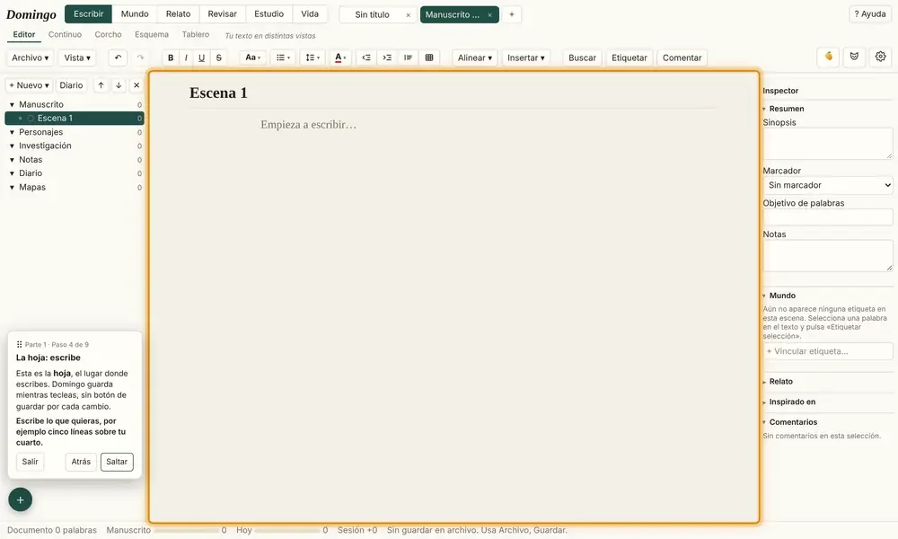

Instructivo › Empezar
El taller guiado
Aprende Domingo practicando. Cada tarjeta te pide algo pequeño y te muestra dónde hacerlo.
Empezar el taller

Cómo funciona
- Lee la tarjeta. Te dice para qué sirve una herramienta y qué hacer con ella.
- Hazlo donde marca el marco naranja. Al completarlo aparece «✔ Hecho».
- Pulsa «Siguiente». Tú decides cuándo avanzar. Si prefieres no hacer un paso, pulsa «Saltar». Con «Atrás» vuelves un paso y con «Reiniciar» regresas al primero de esa parte.
Si la tarjeta te estorba
Muévela tomándola de los seis puntos ⠿ de su encabezado.
Muévela tomándola de los seis puntos ⠿ de su encabezado.
Dos talleres para aprender la app
- Aprender Domingo. Ocho partes de unos 5 minutos. Es lo mejor si es tu primera vez.
- Taller avanzado. Siete partes, cada una dedicada a una herramienta compleja. Úsalo cuando quieras dominarla.
¿Quieres aprender a escribir, no a usar la app?
Para eso está el botón ✎ Talleres, junto a Ayuda. Lee Talleres de escritura.
Para eso está el botón ✎ Talleres, junto a Ayuda. Lee Talleres de escritura.
Todo está en un mismo menú. Se abre con «Empezar el taller» y puedes repetir cualquier parte cuando quieras. El taller trabaja en un manuscrito aparte, así que no toca tus proyectos.
Las ocho partes para aprender Domingo
- Aprende a usar Domingo. Las zonas de la pantalla, crear y escribir un documento, formato, metas, guardar, Inicio y ayuda.
- Tu primer escrito. Tablas y listas, Inspector, buscar y reemplazar, etiquetas y comentarios.
- Mira tu texto de otras formas. Continuo, Corcho, Esquema y Tablero, pantalla dividida, máquina de escribir, cronómetro y Ctrl+K.
- Enriquece tu mundo. Etiquetas, mapas, familia, lenguas e historia.
- Construye tu relato. Tramas, arcos, ramas, tensión y guion.
- Revisa tu texto. Corrección, estilo, glosario y presencia.
- Estudio académico. Fuentes, citas y notas numeradas.
- Tu vida y tus hábitos. Línea de vida, planes, frases, semana, hábito e inspiración.
Desde la tercera parte se abren obras de muestra para practicar con material ya lleno. Se cierran solas al terminar si no las modificaste.
Las siete partes del taller avanzado
- Mapa de principio a fin. Un mapa de relaciones, una línea de tiempo y un mapa geográfico.
- Ramas y tramas a fondo. Líneas del relato, saltos en el tiempo, bifurcaciones y retornos.
- Lenguas inventadas a fondo. Sonidos, léxico, gramática, cambios sonoros y traductor.
- Escritura académica a fondo. Fuentes, citas, argumentos, revisión y notas numeradas.
- Arcos, tensión y presencia. Motivaciones por escena, ritmo y apariciones.
- Diario y ficción. Convertir lo que viviste en una historia y dejar rastro de dónde vino.
- Familia y genealogía. Personas, vínculos, fechas y familias con nombre.
- Colaborar y publicar. Enviar a revisión, importar comentarios, publicar entradas y preparar una para blog.
Las cinco sesiones del taller de escritura
- Una idea que sale de tu vida.
- Tus personajes y su mundo.
- Investiga e inspírate.
- Escribe tu historia.
- Revisa y termina.
Al terminar una parte
Eliges entre seguir con la siguiente, volver al menú o terminar. En las partes que usan el manuscrito del taller, decides si lo conservas o lo cierras.
Idea
Haz el taller una vez al abrir Domingo y otra cuando lleves un mes usándolo. La segunda vuelta te enseñará herramientas que antes no necesitabas.
Haz el taller una vez al abrir Domingo y otra cuando lleves un mes usándolo. La segunda vuelta te enseñará herramientas que antes no necesitabas.